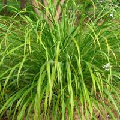

HORT 282 :: Lecture 10 :: PALMAROSA GRASS

PALMAROSA GRASS
(Cymbopogon martinii var.motia., Graminae)
Oil of palmarosa, also known as Rusa or Rusha or Rosha is the essential iii obtained from the aromatic grass Cymbopogon martinii var.motia. The oil obtained from the other form viz. C. martini.var. sofia is known as the ginger grass oil. Motia and sofia grasses are almost identical and difficult to distinguish when they are in earlier growth stages. Motia grass has fine yellow stem with dark green leaves and they attain a height of 1.80 - 2.40 m. On the other hand, sofia grass has purple stem, shorter (90-120 cm) than the motia grass. These oils are used as base for the fine perfumery and are valued because of their geraniol content. The oil is useful in imparting rose - like aroma to a wide variety of soaps, tobacco products etc. The oil of palmarosa is commercially preferred to ginger oil.
Climate and Soil
Palmarosa is a hardy plant and can grow in varying altitude right from sea level. It stands well in places receiving rainfall from 75 cm to 150 cm. But it does not withstand stagnant water. It requires exposed sunlight and does not perform well under shady situations.
Palmarosa prefers a well drained soils of neutral to alkaline reaction and can be grown in poor sandy to heavy-fertile soils of arid tracts, saline soil conditions and also in marginal and sub marginal lands.
Varieties
The NBPGR has identified a superior selection viz. IW 31244 and RRL, Bhubaneswar has identified two improved strains viz. RRL (B)- 77 and RRL(B)-71 for commercial cultivation. A high yielding synthetic variety TRISHNA was developed by poly cross progenies of four elite inbred by CIMAP Lucknow. This improved cultivar registers 40% more oil yield and its geraniol content is as high as 93%.
Land preparation
Nursery bed should be prepared out of well pulverised soil and at a raised level. Leaf mould or farm yard manure should be mixed well with the nursery bed. Seed rate is 2.5 Kg per hectare. Best time for sowing is from April to September. Seedlings become ready for transplanting when they are about 15 cm high.
The main field for raising palmarosa should be prepared by ploughing 3-4 times, followed by forming ridges and furrows at 90 cm apart. The seedlings are transplanted at 60 cm spacing in the ridges. In Kerala, a spacing of 45 x 30 cm is followed but under Delhi condition, a closer spacing of 45 x 15 cm is found to be good in producing higher herbage and oil yield. In North it is recommended as a mixed crop along with Basil to get higher net profit from unit area.
Manures and fertilizers
It responds to application of compost. Under North Eastern condition of India, a fertilizer dose of 60:40:40 NPK kg/ha is followed while under Kerala condition, NPK dose of25, 50 and 25 Kglha is recommended. Micronutrient like zinc (ZnS04 25 Kg /ha) is beneficial to increase the oil yield of palmarosa.
Harvesting
If transplanting is done in May/June, the grass comes to first harvest after six month from transplanting. Harvesting consists of cutting the upper third of the stem along with the leaves. The right time for harvesting is when the plants just begin to bloom as the leaves contain higher oil content during the blooming period. Recent studies at NBPGR, Delhi shows that oil from the whole plant is of good quality and economical to produce as per the table below.
|
Plant part |
Essential oil |
Geraniol (%) |
|
(fresh weight) |
||
1.Whole plant |
0.53 |
72.4 to 86.5 |
|
2.Inflorescence |
0.83 |
72.5 to 84.5 |
|
3.Leaves |
0.58 |
92.9 to 94.6 |
|
4.Stalk |
0.01 |
- |
|
Besides, superior quality of oil with roseousgreen odour is obtained at an early seed setting stage rather than at full bloom stage when the oil yield is slightly higher.
The grass yield more oil recovery if dried for nearly one week. The steam distillation seems to be better than the other type of extraction. Palmarosa yields 15 to 20 tonnes of herbage per ha in a year with an oil yield of 50-60 Kg per year. The plantation can be maintained for about 8 to 10 years, but the oil yield starts declining from the fifth year.
***************
- Botanical name of palmarosa grass is ______________
- Percentage of oil recovery in palmarosa ___________
- Method of oil extraction in palmarosa grass?
- What is the seed rate of palmarosa grass
- Jam Rosa (RRL – 82) is a hybrid between _____________
| Download this lecture as PDF here |